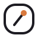
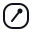

دو مسیر متفاوت طراحی شده برای یک برند: یکی پرانرژی و فناورانه، دیگری مینیمال و باتجربه. هر دو حول یک ایدهی مشترک ساخته شدهاند — ترکیب نماد «کد» با نمادی که به «افزونه» اشاره دارد.
نشانی جسورانه از ترکیب براکت کد و دندانهی پازل، با گرادینت بنفش به فیروزهای. مناسب برندی که میخواهد خودش را فناور، سریع و امروزی نشان دهد.
#6D5BFF#22D3EE#12131A#FFFFFFنشانی مینیمال و ادیتوریال؛ یک نشان خطی با یک نقطهی رنگی بهعنوان امضای برند. مناسب برندی که میخواهد اعتماد، دقت و اعتبار بلندمدت را منتقل کند.

to3edev

#1C1B22#D97A3F#F7F2EA#FFFFFFهر دو کانسپت کامل، مقیاسپذیر (SVG) و آمادهی استفاده در فاویکون، شبکههای اجتماعی و سربرگ هستند. منتظر بازخورد شما برای برند to3edev هستیم.